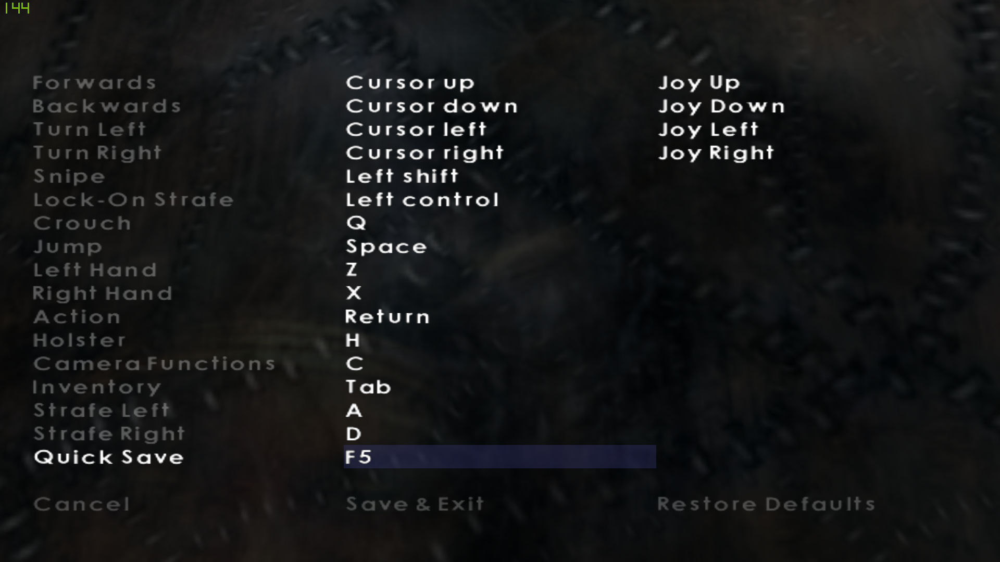

Items List
Map of All Levels (German Website)
Glitches
Game Demos
1997 Beta
E3 Demo
Unity Remake Demo (Fan Made) -
Source
Texture Modifications for PC
arkup's Texture Installer -
Original Texture Installer (For Reverting) -
Source
Gael Romanet's Bump Mapping Effect Retexture -
Original Texture Installer (For Reverting) -
Source
Gael Romanet's New Skies Mod Installer -
Original Skies Installer (For Reverting) -
Source
Maps
Better Map by Winning117
Original Map (Shipped with Game)
Manuals
PC Manual
Trailers
1998 E3 Trailer (0:33)
1999 Trailer (0:34)
1999 Trailer #2 (0:34)
1999 Trailer #3 (2:29)
GOG Trailer (1:44)
PSX Trailer (2:40)
E3 1999 Trailer (2:48)
Night Dive Studios Trailer (1:38)
Cutscene Videos in HD 60FPS w/ Subtitles
All Cutscenes
Startup Intro
First Cutscene
Gameplay Mods (For Steam)
Winning117's Better Mod Menu
Original Game Menu
Other Mods (For Steam)
Winning117's Space Saver (Deletes Unused Files)
Game Saves
Game Dialogue
How to limit FPS on PC
Dxtory Download
Video Tutorial
Limiting the FPS to 60 is useful because the game glitches out at higher framerates
How to run Shadow Man in Windowed mode:
Video
How to use a controller on PC
Keysticks Download
Download Shadow Man Profile (By Winning117) for Keysticks
To use the above profile make sure to set your keyboard layout to the following:

You cannot use the default settings because some keys can not be activated by the controller. Be sure to unbind the keys on the right-hand side aside from the ones shown. This can be done by assigning every key to joy-right, thus deleting the previous entries.
How to fix Shadow Man on Steam not installing:
Open up your shadow man files (probably "Steam\steamapps\common\ShadowMan") and rename "shadowman_installscript.vdf" to "installscript.vdf" then relaunch the game
How to set up the emulator for Segmented N64 runs:
Resolution issues:
Running the game at any resolution above 1920x1440 will result in a 'DirectX Initialization Failure'